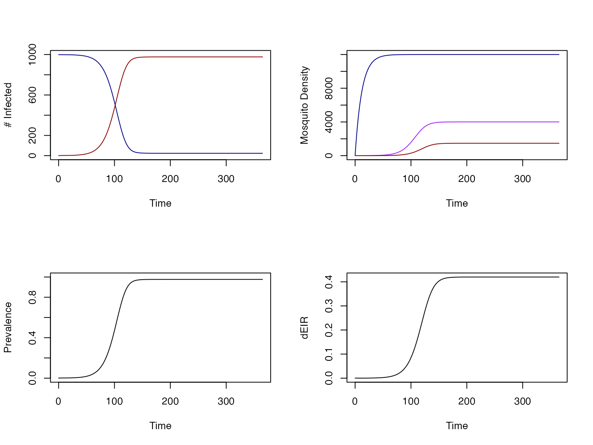
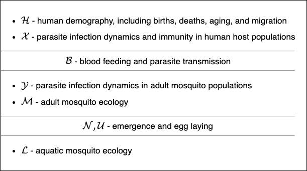

This vignette is a very brief introduction to using
ramp.xds
To download the R package, run these commands:
library(devtools)
devtools::install_github("dd-harp/ramp.xds")Then load ramp.xds:
The software is designed to make it easy to build models.
xds_setup() returns a fully configured
model;
xds_solve() solves it, parses the outputs, and
computes most of the standard terms.
Note that the second function call passes model to
xde_solve and returns a modified object that replaces the
old model. Before xde_solve,
model$outputs is an empty list. After solving, the outputs
are stored as model$outputs:
names(model$outputs)## [1] "time" "last_y" "bionomics" "orbits" "terms" "deout"The output times from xde_solve as time,
the final state as last_y, the solutions with the variables
parsed by name called orbits, the dynamical
terms like the EIR, and the raw (unparsed) outputs as
deout For models with exogenous forcing, the model has
computed biononmics, the values of bionomic parameters at
each time step.
Every time xde_solve is called, the outputs are
replaced. If the user wants to save them for analysis, they must get the
values. Functions like get_EIR() make it easy to examine or
save a set of standard outputs without delving into the details.
## [,1]
## [1,] 0.0002850000
## [2,] 0.0002622311
## [3,] 0.0002412851Another set of functions plots the outputs:
par(mfrow = c(2,1))
xds_plot_PR(model)
xds_plot_EIR(model)
xds_plot_X(model)
ramp.xds was designed to reduce the
costs of model building and computation for malaria and other
mosquito-transmitted pathogens. We assume the end user has come to
ramp.xds to give it a try, and we assume
that most users will be skeptical that the software will be easier to
use than developing something they could code from scratch.
This demo model is a version of the Ross-Macdonald model. It
illustrates how the software has streamlined the process of building
fairly simple models. The following sections describe how to make
ramp.xds work with much more complicated
tasks.
From a design perspective, the software can’t possibly anticipate the
needs of every end user through a setup interface. Instead, it has
adopted a system for setting up models that is based on the principle of
scaling complexity: the system understands the universe of
possible models as a nested, hierarchical set. In some limiting case, a
complex model is equivalent to a simpler model. The concept for
model building was (in some weird sense) to engineer the possibility of
reversing that simplification process. The function
xds_setup() was thus designed for Basic
Setup. The framework also includes a set of functions and
utilities for Advanced Setup. Finally,
ramp.xds also includes a lot of utilities
to make it easy to work with the models, including functions to examine
and change initial values and parameters.
For our purposes, Basic Setup encompasses the
configurable options in xds_setup().
Which model was setup and solved in the demo above? The software supports a modular framework for model building that is highly flexible and extensible. It’s capable of building very capable models, but the software embraces a model-building philosophy of starting simple and adding realism or complexity one step at a time.
The xds_setup() function
ramp.xds has assigned default options for
everything. Each model must configure three dynamical components: human
epidemiology; adult mosquito ecology and infection dynamics; and aquatic
mosquito ecology. Each one of these three dynamical component is
configured by specifying a model name (as a string) and options, passed
as a named list, to override the defaults for the model:
Xname dispatches a model family for human parasitic
infections and immunity, \(\cal X.\)
The setup default model is Xname="SIS" with default
parameters defined in create_Xpar_SIS. To replace the
default values at setup, a named list can be passed as
Xopts = list(...) and the values in Xopts will
be used instead of the defaults.
MYZname dispatches a model family for adult mosquito
ecology and parasite infection dynamics, \(\cal MYZ.\) The setup default model is
MYZname="RM" with default parameters defined in
create_MYZpar_RM. To replace the default values at setup, a
named list can be passed as MYZopts = list(...) and the
values in MYZopts will be used instead of the
defaults.
Lname specifies a model family for aquatic mosquito
ecology, \(\cal L.\) The setup default
model is the trivial model Lname = "trivial". It has no
variables, but it passes the outputs – emerging adults – as a parameter.
To replace the default values at setup, a named list can be passed as
Lopts = list(...) and the values in Lopts will
be used instead of the defaults.
The two commands return identical objects:
The framework is designed to support five dynamical components each handling a different process:
human (or host) demography (\(\cal H\)) including births, deaths, aging and migration;
malaria epidemiology (\(\cal X\)), in the narrow sense; or more generally, the dynamics of infection and immunity in the host population;
mosquito ecology (\(\cal M\))
mosquito infection dynamics (\(\cal Y\))
aquatic mosquito ecology (\(\cal L\)).
These are organized into three chunks:
Human demography and malaria epidemiology (or the comparable
processes for other host-pathogen models) are handled together (as \(\cal XH\)). By default, human demography is
assigned a trivial model, with no births or deaths. At the
present time, it is not configurable using
xds_setup()
Adult mosquito ecology and infection dynamics are handled together (as \(\cal MY\)).
Aquatic mosquito ecology (\(\cal L\)).
These three chunks are connected by two interfaces. The first two chunks are connected through the rigid interface describing blood feeding and transmission. The last two chunks are connected through egg laying and emergence.

In the example above, the blood feeding and transmission interface is very simple, and the second interface is reduced to a trace function passed from the trivial aquatic model.
Basic setup makes it possible to handle spatial dynamics with multiple human / host population strata. Basic setup was developed to ensure that all interfaces are set up properly when there are multiple patches, multiple habitats, multiple population strata, and malaria importation. The framework follows the mathematical formulas and (with small changes) the notation in Wu SL, et. al. 2023
nPatches or \(n_p\) is the number of patches in the
model.
membership is a vector with the
identity of patch where each habitat can be found. Setup sets the value
of a variable
nHabitats <- length(membership). One
configurable option is searchQ with the
habitat search weights.
HPop is a vector with human
population density, and residence is a
vector describing the location of the patch where each stratum resides.
Setup checks that length(HPop) == length(residence) and
sets the value of a variable
nStrata <- length(residence). It is
also possible to configure heterogeneous biting at the command line by
passing searchH
If nPatches >1 then
a matrix calK describing mosquito dispersal among
the patches.
a matrix TimeSpent can be passed to configure human
time spent
To learn more, we suggest taking a look at the 5-3-4 Vignette, a model with 5 aquatic habitats, 3 patches, and 4 human population strata.
NOTE: As demos get developed, we will add the links here.
Advanced Setup Options: During basic setup, most options are turned off or set to their default (no effect) values.
Exposure – Since catch counts data for
mosquitoes are usually well-described by a negative binomial
distribution, ramp.xds has implemented a
step between the computation of the EIR and the FoI to model
environmental heterogeneity, based on a probability
distribution function describing the number of infective bites per
person. By default, xds_setup configures a Poisson model,
but this can be changed.
Human Demography – In basic setup, the human demographic model is the trivial model, but it can be configured with births, deaths, and aging.
Travel Malaria – In basic setup, travel malaria is set up to model exposure while traveling, but time spent traveling and the travel FoI are set to zero.
Visiting – In basic setup, visiting is set up but the availability of visitors is set to zero.
Forcing – handles exogenous forcing by setting up the functions that compute exogenous variables, including weather and hydrology.
Control – handles malaria control and vector control.
Bionomics – handles functional responses to exogenous forcing variables and computes a baseline.
Multiple Vector Species – Each vector species has spatial structure, but it is also possible to configure other vector species (or type).
Multiple Host Species – Each host species can be stratified, but it is also possible to configure other host species (or types) to make setup and configuration easier.
The xds model object – any object that
can be solved by xde_solve or dts_solve – is a
compound list in R. If you know what you’re doing, it’s easy enough to
change any of the parameter values. Some of the values affect the rigid
interfaces for egg laying and emergence and for blood feeding and
transmission, so changing the values without updating the interface
would create a model that was internally inconsistent. To handle this,
ramp.xds has introduced functions to make
it easy to change values after setup.
From the user perspective, using these
change_ functions will make it easy to
avoid various errors. There are three kinds of functions:
Changing a quantity that affects some part of an interface:
Human population density
The mosquito dispersal matrix
The time spent matrix
Changing initial values, except human / host population density:
Changing parameter values.